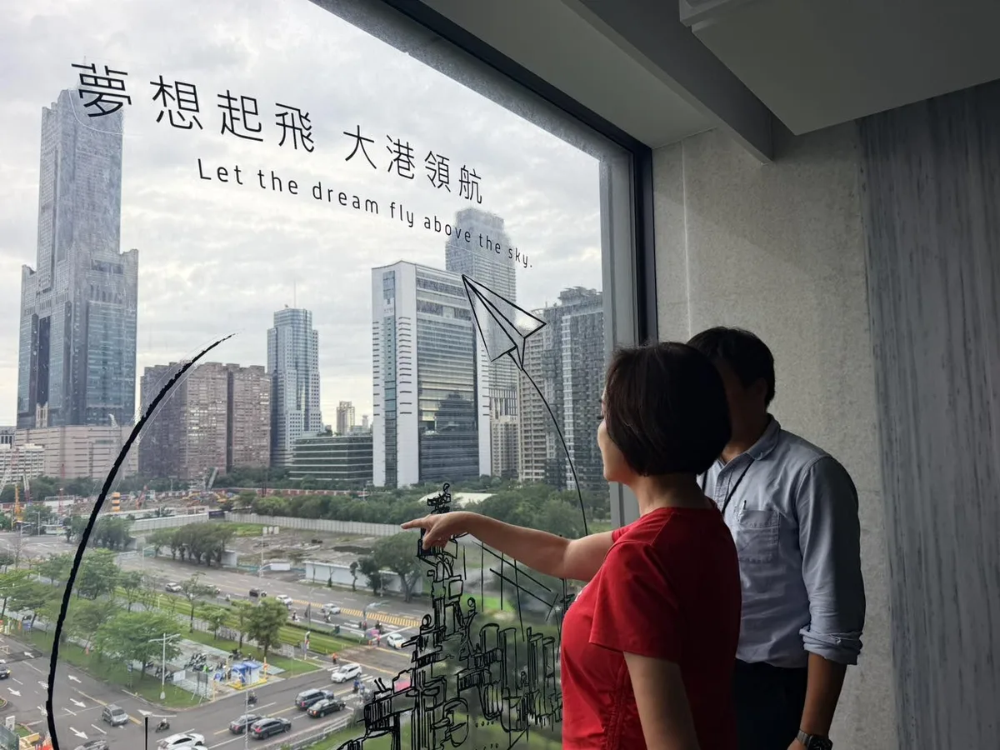

龍介今天正式登記參選台南市長！「路平、燈亮、水溝通」市民小事情就是龍介的大事情！這不正常..台南市交通罰單100件申訴有17件通過 20260901 @longmedia ｜龍介的直播
Posts
龍介今天正式登記參選台南市長！「路平、燈亮、水溝通」市民小事情就是龍介的大事情！這不正常..台南市交通罰單100件申訴有17件通過 20260901 @longmedia ｜龍介的直播

@hsiehlungchieh:網友陳情：南科直線道路限速不合理..管理局會議決議統一調整


網友陳情：麻豆油車里自強街這段路，20-30年完全沒修過…尤淨寬代表尤榮智議員已現場勘察


團結拚勝選，延續高雄綠色執政！ 信賴之友會、小英之友會的夥伴齊心相挺，為高雄下一個黃金十年一起努力。感謝信賴之友會會長莊維周醫師，多年投入國家醫療政策與公共衛生；也謝謝小英之友會會長黃來進，一直以來堅信價值、情義相挺。 從謝長廷市長、陳菊市長到陳其邁市長，一棒接一棒，推動城市轉型、重大建設與產業升級，累積出今天高雄的城市面貌。 高雄下一個十年，要有新的佈局。 我提出「大南方計畫」，要拚產業、留人才、強交通、顧生活。在歷任市長奠定的基礎上推動產業轉型、完善交通建設、照顧不同世代，為高雄布局下一個黃金十年。 高雄的進步，是高雄人共同的選擇；台灣的民主，是我們共同的價值。 最後90天，我們一起拚下勝選，延續綠色執政，讓高雄繼續為台灣拚出更好的未來！ 高雄小金剛許智傑 李柏毅 拚搏未來 康裕成 高雄市議長 姐姐的行動力 李喬如 何權峰 高雄市議員 簡煥宗 高雄市議員 黃彥毓 前鎮小港 我願意 邱俊憲 高雄市議員 湯詠瑜 詠瑜新選擇 陳慧文 高雄市議員 黃文益 高雄市議員 鄭孟洳 高雄市議員郭建盟 張勝富 高雄市議員 黃文志 高雄市議員 鄭光峰 高雄市議員 張博洋 尹立 左營楠梓市議員參選人 蔡秉璁 高雄向前衝 黃敬雅 Huang Ching-Ya 蘇致榮 鳳山阿榮 吳昱鋒-鎮港小前鋒 林慧欣 李昆澤 服務團隊


臺北捷運 #信義線東延段 正式通車！🚇 今天下午，首班列車從全新的「廣慈/奉天宮站」出發。 對許多住在信義區東側的市民朋友來說，這一天期待已久。從今天開始，捷運來到家門口，也讓通勤、洽公、育兒、休閒，都多了一個更方便的選擇。 這 1.4 公里，為臺北帶來五個重要改變： 一、捷運路網擴大至信義區東側 福德街周邊居民不必再搭公車到象山、永春轉乘，從廣慈/奉天宮站上車，即可直達臺北101、大安森林公園、臺北車站、士林、北投、淡水。 二、通勤時間更穩定 信義區東側居民多了一個不受路面交通影響的公共運輸選擇，上下班時間也更好掌握。 三、完善在地生活圈 串聯廣慈博愛園區、信義區行政中心，讓長輩、身心障礙朋友及育兒家庭洽公、使用社福資源時，少走一段路、少一次轉乘。 四、帶動地方繁榮 串聯奉天宮、在地商圈、市場及親山步道，讓更多人走進信義區東側，也為地方帶來更多人流與商機。 五、「臺北捷運六線齊發 2.0」持續推進 信義線東延段通車後，萬大線一期、南北環段、東環段也將接力推進，持續完善捷運路網，改善內湖及整體市區交通。 信義線東延段被稱為「史上最難捷運工程」。 一路走來，工程團隊克服複雜地質、狹窄施工空間等重重挑戰。短短 1.4 公里，背後是10 年的努力。 今天終於能把這座車站交給市民朋友，這份成果是大家共同努力的結果。謝謝歷任市長、市府團隊、捷運工程團隊及北捷公司，也謝謝在地民意代表、里長和居民，這些年來對施工的支持與體諒。 今年適逢臺北捷運通車 30 週年，我們用信義線東延段，再寫下新的歷史一頁。 等了10 年，歡迎大家一起來搭車！🚇

@hsiehlungchieh:回覆網友陳情：台南新營車站前方路面不平...蔡育輝議員答覆他會處理

從幸福城到旗艦城，臺中的下一步，要讓每個生活問題都有解方！💪 今天受邀出席 #城市治理綜合座談，與柯文哲理事長、民眾黨黃國昌主席及各界專家交流。城市治理不是喊口號，而是要把市民每天面對的問題，一件一件解決。 在主題分享中，我談到臺中的下一階段，要發揮精密製造優勢，發展AI機器人與會展經濟，結合海空雙港，讓世界看見臺中、讓訂單走進臺中，從幸福城升級為代表臺灣的旗艦城市。 主題分享後，進入QA階段，大家問得直接，我也具體回答。八年前，市民最關心空氣；現在，交通排第一。免費公車不是只少收10元，更要重整路線、增加班次、提升準點率並改善司機待遇；透過四大轉運中心，串聯快速公車、YouBike與社區接駁。捷運必須多線齊發，清泉崗機場也應朝千萬人次規模擴建，讓 #中進中出 更加便利。 有市民問到中西區老屋與閒置空間的問題。對我來說，中西區不是臺中的過去，而是找回城市靈魂、重新出發的地方。我把 #競選總部設在西區，就是要從舊城出發，活化百年市場與新民街倉庫群，引進音樂、展演及青年創意，讓舊城真正活起來。 也有市民關心，臺中能不能擁有自己的親子探索樂園？我支持積極評估，並持續增加親子設施、特色公園與共融遊戲場，讓年輕人敢生、養得起，更讓整座城市陪孩子好好長大。 近300萬鄉親一起組成最強臺中隊，臺中好，中臺灣就更好；中臺灣更好，臺灣一定更好！ #從幸福城到旗艦城 #治理從地方開始 #臺中啟程 #打造旗艦城


選戰最後90天，謝謝每一位姐妹的相挺，讓我們繼續堅定同行、團結努力，一起開創欣欣向榮的新台中！ 超過一千名姐妹從大台中各地來到現場，現場座無虛席，甚至還緊急加開場廳與座椅，大家加油聲一波接一波，讓我感受到滿滿的支持與力量。 姐妹們最了解家庭需要，也最清楚市民生活大小事，未來我將從大家最關心的事情出發，用「行動、溫度、創新」帶領台中力拚三個第一： ✨ 捷運路網推動效率第一 ✨ 全齡照顧六星福利第一 ✨ 無人載具產業聚落第一 不只如此，我還要在財政許可並經市議會通過下，推動 #普發現金 ，讓市民共享城市發展紅利。


跨越95年踏實堅毅的步伐，走在弘揚母娘神威道路上。 今天是瑤池金母聖誕千秋，一早我與 侯友宜 市長，一起到蘆洲慈惠堂參拜，拜訪95歲的林堂主。 堂主的奉獻，就如母娘，「為他人想，以慈悲對待眾生。」 還記得，蘆洲慈惠堂過去使用桶裝瓦斯，在引進天然氣管線時，遇上了許多問題，那時我用盡所能，與地方溝通，最後終於完成。 「用心，真理妙法即在眼前」，凡事用心，無愧於心，便能事事順心。 進道場修「佛緣」，與人相處要有「人緣」。我有鄉親的支持，有侯市長的認可，有母娘慈悲的關懷。 未來蘆洲醫院的興建、蘆社大橋的規劃，我都會在侯友宜市長的基礎上，讓三蘆地區有更完善醫療照護，也讓這裡能夠蓬勃發展。 我與蘆洲的淵源很深，願意付出我的一生。

走進大坑9號步道，和大家一起健走、流流汗，也感受大坑滿滿的自然活力🌿🥾 大坑有好山、好風景，更有豐富的生態、歷史文化和農特產品，是台中珍貴的城市瑰寶。但要讓更多人走進大坑，交通一定要更方便！ 我承諾：捷運綠線延伸大坑，首任四年一定動工、力拚完工！ 未來更要串聯公車路網，完善最後一哩路，讓捷運帶動人潮，也帶動大坑整體觀光發展。 讓交通建設串起好山、好景、好生活，讓更多人看見大坑，也看見台中的美好❤️


有一件事， 我這幾年一直在做， 想像台南未來的樣子。 十年後的台南， 會是什麼模樣？ 孩子長大後， 希望他們在哪裡工作？生活？ 年輕人回到台南， 能不能找到一份有穩定的工作？ 農民辛苦了一輩子， 能不能因為科技輔助，讓土地有更好的價值？ 老人家需要醫療的時候， 能不能不用舟車勞頓，就近得到最好的照顧？ 這些問題， 我想了很久。 慢慢地， 每一條路， 每一個方向， 開始在我的腦海裡變得清楚。 農業科技、 半導體與AI、 綠能與智慧科技、 醫療科技。 從溪北到溪南， 從城市到農村， 從產業到生活。 我想做的， 是讓台南原本就有力量擴展出去。 讓農業更有競爭力， 讓科技產業留下更多人才， 讓醫療、交通、觀光與生活， 都跟著城市一起進步。 所以這些日子， 我一直在走、一直在看、一直在聽。 看城市的每一個角落， 也看每一個台南人對未來的期待。 因為我相信， 一座城市的藍圖， 不能只畫在紙上。 它要烙印在心裡， 再一步一步， 變成我們每天看得見的生活。 台南的藍圖， 早就印在我的腦海裡。 現在， 我要和大家一起， 把藍圖一步一步變成台南的未來。

網友陳情：南科直線道路限速不合理..管理局會議決議統一調整

@hsiehlungchieh:網友陳情：麻豆油車里自強街這段路，20-30年完全沒修過…尤淨寬代表尤榮智議員已現場勘察

下雨也不怕，橋下空間變身孩子的交通安全教室！🚦 啟臣今天來到霧峰，和大小朋友一起見證 #六股里金龜親子共融園區 正式啟用。園區 #善用橋下空間 ，不僅遮陽避雨，更設置紅綠燈、道路標線等交通情境，讓孩子一邊玩、一邊學習交通規則。現場我問小朋友「紅燈能不能走？」大家回答得又快又大聲， #交通安全就是要從小扎根！ 一座好的公園，不只是多了遊具，更要讓親子有地方相聚、孩子能安心成長。感謝林碧秀議員、顏寬恒委員積極爭取、臺中市府建設局、六股里王原祥里長及工程團隊共同努力，把橋下空間變成晴雨都能使用的親子樂園。 雖然下著雨，現場的笑聲一點都沒少。未來也要持續盤點更多城市空間，讓臺中的孩子有更多安全、好玩又有教育意義的遊戲場！ #霧峰 #六股里 #金龜親子共融園區 #交通安全從小做起 #臺中升級 #幸福加給 #臺中啟程 #打造旗艦城

回覆網友陳情：台南新營車站前方路面不平...蔡育輝議員答覆他會處理

Responding to a netizen's petition: Uneven road surface in front of Tainan Xinying Station... Cou...

@hammer__lee:跨越95年踏實堅毅的步伐，走在弘揚母娘神威道路上。 今天是瑤池金母聖誕千秋，一早我與 侯友宜 市長，一起到蘆洲慈惠堂參拜，拜訪95歲的林堂主。 堂主的奉獻，就如母娘，「為他人想，以慈悲對待眾生。」 還記得，蘆洲慈惠堂過去使用桶裝瓦斯，在引進天然氣管線時，遇上了許多問題，那時我用盡所能，與地方溝通，最後終於完成。 「用心，真理妙法即在眼前」，凡事用心，無愧於心，便能事事順心。 進道場修「佛緣」，與人相處要有「人緣」。我有鄉親的支持，有侯市長的認可，有母娘慈悲的關懷。 未來蘆洲醫院的興建、蘆社大橋的規劃，我都會在侯友宜市長的基礎上，讓三蘆地區有更完善醫療照護，也讓這裡能夠蓬勃發展。 我與蘆洲的淵源很深，願意付出我的一生。

@a_chun1973:選戰最後90天，謝謝每一位姐妹的相挺，讓我們繼續堅定同行、團結努力，一起開創欣欣向榮的新台中！ 超過一千名姐妹從大台中各地來到現場，現場座無虛席，甚至還緊急加開場廳與座椅，大家加油聲一波接一波，讓我感受到滿滿的支持與力量。 姐妹們最了解家庭需要，也最清楚市民生活大小事，未來我將從大家最關心的事情出發，用「行動、溫度、創新」帶領台中力拚三個第一： ✨ 捷運路網推動效率第一 ✨ 全齡照顧六星福利第一 ✨ 無人載具產業聚落第一 不只如此，我還要在財政許可並經市議會通過下，推動 #普發現金 ，讓市民共享城市發展紅利。

@a_chun1973:🥾 週末健走大坑，未來搭捷運來爬山不是夢！ 今天來到大坑9號步道，和大家一起走走、流流汗，也感受大坑的好山好風景🌿 大坑是台中的城市瑰寶，要讓更多人來走走，交通一定要更方便！ 🚇 捷運綠線延伸大坑，我承諾首任四年一定動工、力拚完工！ 未來串聯捷運、公車與周邊景點，讓大家搭捷運就能來爬山，也讓交通帶動大坑觀光發展。

以港立市、與海共生：用 5G AIoT 鏈接全球，讓高雄智慧海洋航向世界！ #高雄 是一座「以港立市、與海共生」的城市，航運與港口一直是高雄與我國經濟發展的核心。然而，傳統航運長期面臨「海上斷網」與「資料破碎」的數位斷層。日前我到高雄在地的摯陞數位科技亞灣辦公室參訪，看到他們如何解決這塊航運的長期痛點，真的備受震撼！ #摯陞科技 建立了一條從「船、海、岸、雲」完整的資料動脈，透過感測器、低軌衛星與4G/5G多通道通訊及AI 大數據，把船上的各種格式不一的儀表雜訊，轉化為標準化、可分析的決策訊號，不僅能即時掌握海況避險，確保船舶在海上不再失聯，更能將海面回傳的資料匯集成即時戰情圖，應用AI影像識別、任務排程與智能告警，讓岸端管理階層能迅速決策並與船舶同步。 還可整合全球 AIS大數據，提供船隻最佳航線推薦、CII碳強度指標預測與風險警示，讓航運數位轉型朝向大數據預測與永續（ESG）管理邁進。這正是高雄發展「智慧海洋」最需要的原創技術！ 這次參訪，也讓我看見高雄推動產業升級的三大關鍵藍圖： 1. 跨域強強聯手，打造智慧外銷供應鏈 摯陞的技術已打入台船、陽明海運、中鋼運通及海軍、海巡署等國家級供應鏈。高雄有深厚的造船與金屬加工根基，高雄市政府未來要扮演最強媒合者，將在地製造與 AIoT 智慧技術結合，讓台灣的「智慧船舶」大步邁向國際市場！ 2. 開放「沙盒」試驗場域，加速無人載具落地 摯陞在無人船（USV）的研發，展示了船隻群控管理與衛星鏈路的強大整合力。智慧船舶的研發需要專屬水域，高雄市政府應支持研發業者，規劃完善的試驗沙盒，提供自動航行與衛星通訊等測試環境，讓無人載具技術在高雄港灣順利落地。 3. 成為新創最強後盾，注入研發資金與資源 對於像摯陞科技這樣，具備深厚研發實力、願意「穿著白鞋進場，穿著灰鞋出來」踏實耕耘的年輕團隊，無論是人才培育、國際視野還是研發資金的對接，高雄市政府都應該扮演更積極、更有彈性的協助角色，包括成立跨局處的單一窗口，高效對接產官學研資源；同時，市府更要成為在地企業爭取中央資源與補助的最佳後盾。 感謝 #陳聖文 執行長與摯陞團隊的努力，為台灣留下了不起的海事原創技術。我若有機會帶領高雄這個大家庭，一定會持續做產業最強的靠山，讓高雄的海洋產業，航向世界、航向未來。

網友陳情：南科直線道路限速不合理..管理局會議決議統一調整

This section of Ziqiang Street in Madou's Youche Village hasn't been repaired in 20-30 years... R...

網友陳情：麻豆油車里自強街這段路，20-30年完全沒修過…尤淨寬代表尤榮智議員已現場勘察

臺北捷運 #信義線東延段 正式通車！🚇 今天下午，首班列車從全新的「廣慈/奉天宮站」出發。 對許多住在信義區東側的市民朋友來說，這一天期待已久。從今天開始，捷運來到家門口，也讓通勤、洽公、育兒、休閒，都多了一個更方便的選擇。 這 1.4 公里，為臺北帶來五個重要改變： 一、捷運路網擴大至信義區東側 福德街周邊居民不必再搭公車到象山、永春轉乘，從廣慈/奉天宮站上車，即可直達臺北101、大安森林公園、臺北車站、士林、北投、淡水。 二、通勤時間更穩定 信義區東側居民多了一個不受路面交通影響的公共運輸選擇，上下班時間也更好掌握。 三、完善在地生活圈 串聯廣慈博愛園區、信義區行政中心，讓長輩、身心障礙朋友及育兒家庭洽公、使用社福資源時，少走一段路、少一次轉乘。 四、帶動地方繁榮 串聯奉天宮、在地商圈、市場及親山步道，讓更多人走進信義區東側，也為地方帶來更多人流與商機。 五、「臺北捷運六線齊發 2.0」持續推進 信義線東延段通車後，萬大線一期、南北環段、東環段也將接力推進，持續完善捷運路網，改善內湖及整體市區交通。 信義線東延段被稱為「史上最難捷運工程」。 一路走來，工程團隊克服複雜地質、狹窄施工空間等重重挑戰。短短 1.4 公里，背後是10 年的努力。 今天終於能把這座車站交給市民朋友，這份成果是大家共同努力的結果。謝謝歷任市長、市府團隊、捷運工程團隊及北捷公司，也謝謝在地民意代表、里長和居民，這些年來對施工的支持與體諒。 今年適逢臺北捷運通車 30 週年，我們用信義線東延段，再寫下新的歷史一頁。 等了10 年，歡迎大家一起來搭車！🚇
何欣純健走大坑 「搭捷運來爬山不是夢」 台中市長候選人、立法委員何欣純今（30） […] 〈 何欣純健走大坑 「搭捷運來爬山不是夢」 〉這篇文章最早發佈於《 何欣純官方網站｜2026 台中市長候選人 》。


來三重和孩子們一起同樂 打造友善育兒的新北市！ 這幾天，我接連參加 #李倩萍、 #顏蔚慈 議員舉辦的親子活動，和孩子一起看精彩的《蟲蟲馬戲樂園》，還一起在公園玩超有趣的泡泡，大家真的都玩瘋了！ 最開心的是，一到現場就聽到好多孩子大喊「水獺媽媽！」還主動跟我打招呼、擊掌，大家都有認真聽故事、學台語喔！ 除了陪伴孩子長大，我也要做爸爸媽媽最可靠的隊友。未來，我要打造95公分視角城市，從孩子的高度重新檢視公共空間，也會推動0到6歲看病免門診及住院部分負擔、6歲以下腸病毒及輪狀病毒疫苗免費，並增加 夜間托育、建置 臨時托育查詢平台，讓育兒家庭有更大的支持。 我也會和倩萍、蔚慈一起努力，推動 「三重2.0」，加速第二行政中心、市圖第二總館、三重聯醫第三醫療大樓等重大建設；在蘆洲推動蘆南和蘆北重劃區、蘆社大橋，緊盯捷運北環段工程進度。 我會繼續帶著新北隊努力，為大家打造更友善育兒家庭的新北市！

跨越95年踏實堅毅的步伐，走在弘揚母娘神威道路上。 今天是瑤池金母聖誕千秋，一早我與 @hou.yuih 侯友宜市長，一起到蘆洲慈惠堂參拜，拜訪95歲的林堂主。 堂主的奉獻，就如母娘，「為他人想，以慈悲對待眾生。」 還記得，蘆洲慈惠堂過去使用桶裝瓦斯，在引進天然氣管線時，遇上了許多問題，那時我用盡所能，與地方溝通，最後終於完成。 「用心，真理妙法即在眼前」，凡事用心，無愧於心，便能事事順心。 進道場修「佛緣」，與人相處要有「人緣」。我有鄉親的支持，有侯市長的認可，有母娘慈悲的關懷。 未來蘆洲醫院的興建、蘆社大橋的規劃，我都會在侯友宜市長的基礎上，讓三蘆地區有更完善醫療照護，也讓這裡能夠蓬勃發展。 我與蘆洲的淵源很深，願意付出我的一生。

#心純姐妹會 正式成立！ 超過一千名姐妹從大台中各地來到現場，現場座無虛席，甚至還緊急加開場廳與座椅，大家加油聲一波接一波，讓我感受到滿滿的支持與力量。 每一位溫柔堅韌的姐妹，都是民主的花朵，也是地方最溫暖的夥伴，未來我們會一起走進大台中29區，讓民主花朵在台中各地綻放。 姐妹們最了解家庭需要，也最清楚市民生活大小事，未來我將從大家最關心的事情出發，用「行動、溫度、創新」帶領台中力拚三個第一： ✨ 捷運路網推動效率第一 ✨ 全齡照顧六星福利第一 ✨ 無人載具產業聚落第一 從生育、長輩照顧，到孩子每天的營養午餐，都要照顧得更周全，而且我還要在財政許可並經市議會通過下，推動 #普發現金 ，讓市民共享城市發展紅利。 選戰最後90天，謝謝每一位姐妹的相挺，讓我們繼續堅定同行、團結努力，一起開創欣欣向榮的新台中！ #心存大台中 #市長換欣_台中創新

🥾 週末健走大坑，未來搭捷運來爬山不是夢！ 今天來到大坑9號步道，和大家一起走走、流流汗，也感受大坑的好山好風景🌿 大坑是台中的城市瑰寶，要讓更多人來走走，交通一定要更方便！ 🚇 捷運綠線延伸大坑，我承諾首任四年一定動工、力拚完工！ 未來串聯捷運、公車與周邊景點，讓大家搭捷運就能來爬山，也讓交通帶動大坑觀光發展。

週六行程滿檔！打造新北觀光品牌 活絡商圈老街經濟！ 今天都在新北跑透透！上午我來到淡水、八里和各區商圈協會的好朋友們請益，中午也前往「板橋扶輪家族九社聯合例會」，與扶輪社友們交流，敬佩大家投入國內外的公益服務、熱心做慈善的付出，也和大家分享我的市政願景。隨後又趕往金山參加「山海生活節」，用行動支持老街商圈，享用在地好吃的美食。 我也向商圈夥伴們報告，未來將以 #預算加倍 為目標，投入更多資源協助商圈行銷、轉型與發展，帶動商機與人潮！ ✅ 補助提升三倍 商圈補助從每年600萬元提高至1800萬元。 ✅ 優化軟硬體建設 改善人行空間、公共設施與大眾運輸規劃，打通前往商圈的最後一哩路。 ✅ 成立專家業師商圈總輔導團 協助商圈規劃特色、申請活動、改善設備，提升城市行銷與觀光效益。 ✅ 舉辦城市級特色活動 串聯商圈、景點與在地文化，讓新北各區有特色、每季有活動。 我會繼續努力，讓新北各區的商圈更熱鬧，也讓新北市珍貴的山海美景被更多人看見！